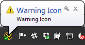

In this Article I'm going to explain how to send a message to the Altiris Agent via a Task, this is possible due to a method within the Agent called DisplayBalloon.
Remote onto your SMP/Altiris Server
Go to the ASDK Help file
"[Install Drive]:\Program Files\Altiris\Altiris ASDK\Help\ASDK7.6.chm"
Open and search for "DisplayBalloon"
Cause the agent to display a message to the user.
Namespace: Altiris.ASDK.Agent
Assembly: Altiris.ASDK.Agent (in Altiris.ASDK.Agent.dll)
public Object DisplayBalloon(string title,string message,int iconType,int timeout
)
Parameters
title
Type: System...String
Text to display in the balloon title.
message
Type: System...String
Text to display as the balloon message.
iconType
Type: System...Int32
Id number of the icon to display.
timeout
Type: System...Int32
Number of seconds to display the balloon.
Return Value
A handle to the balloon.
So create a vbs file (SendNotificationTask.vbs):
We need a few objects to work with so we will set them first.
'Altiris Agent - Send Notification Task
Set objAltirisAgent = Nothing
Set objWshShell = WScript.CreateObject("WScript.Shell")
Set objFSO = CreateObject("Scripting.FileSystemObject")
Next we wan to check if the Altiris Agent exists:
Dim strAltirisDir, strAltirisReg
strAltirisDir = "c:"
strAltirisReg = "HKEY_LOCAL_MACHINE\SOFTWARE\Altiris\Altiris Agent\InstallDir"
if RegVerify(strAltirisReg) then
strAltirisDir = objWshShell.RegRead(strAltirisReg)
end if
If objFSO.FileExists(strAltirisDir & "\AeXAgentActivate.exe") Then
set objAltirisAgent = CreateObject("Altiris.AeXClient")
else
set objAltirisAgent = Nothing
End if
We can do this with a method to verify the Registry key exists and check that folder.
Public Function RegVerify(ByVal sRegEntry)
On Error Resume next
Dim WSH, sKeyTmp
Set WSH = CreateObject("WScript.Shell")
sKeyTmp = WSH.RegRead (sRegEntry)
if err.number=0 then
RegVerify = True
else
RegVerify = False
end if
err.clear
On Error goto 0
End Function
Next we want to create a function to display a message
sub AltirisBubble(strTitle, strMsg, intIcon, intTime)
if numLoggedinUsers() => 0 then
if not objAltirisAgent Is Nothing then
dim sessmgr, sessions, session, cookie
set sessmgr = objAltirisAgent.SessionManager
set sessions = sessmgr.Sessions
set session = sessions.Item ( 0 )
cookie = session.DisplayBalloon ( "", "", intIcon, 0, Nothing)
WScript.Sleep 10
cookie = session.DisplayBalloon ( strTitle, strMsg, intIcon, intTime, Nothing)
set sessmgr = Nothing
set sessions = Nothing
set session = Nothing
end if
else
'Log
end if
end sub
To change the Icon on the Message pass in one of the following numbers
- 0 | 1 | 2 | 3 | 4 | 5 | 6
'intIcon info
' 0 = No Icon
' 1 = Information Icon
' 2 = Warning Icon
' 3 = Error Icon
' 4 = Altiris
AltirisBubble "No Icon", "There is No Icon", 0, 10
AltirisBubble "Information Icon", "Information Icon", 1, 10
AltirisBubble "Warning Icon", "Warning Icon", 2, 10

AltirisBubble "Error Icon", "Error Icon", 3, 10
AltirisBubble "Altiris", "Altiris", 4, 10
AltirisBubble "Test", "Warning Big", 5, 10

AltirisBubble "Test", "Error Big", 6, 10

Another helper method we can use is to get the number of logged in users
Function numLoggedinUsers()
Dim objWMIService
Dim intUserLoggin
strComputer = "."
Set objWMIService = GetObject("winmgmts:" _
& "{impersonationLevel=impersonate}!\\" & strComputer & "\root\cimv2")
Set colComputer = objWMIService.ExecQuery _
("Select * from Win32_ComputerSystem")
intUserLoggin = 0
For Each objComputer in colComputer
if objComputer.UserName <> "" then
intUserLoggin = intUserLoggin + 1
end if
Next
numLoggedinUsers = intUserLoggin
End Function
You can now create this as a Task in the SMP and add it to a Job, beginning/end to display a message to the User.
At the moment the message is hardcoded which doesn't make it very flexible, why not use a Task Parameter?
Adding a variable into the script is done by enclosing your Paramter name in "%!" and "!%"
"%!Message!%"
We can now replace the script to have
AltirisBubble "%!Title!%", "%!Message!%", 1, 10
And now you can choose which Title and Message you want in each task you create.
Other Articles
If you've got a Win10 machine you wish to send the new toast notifications, check out this excellent Article from a fellow developer Chris: